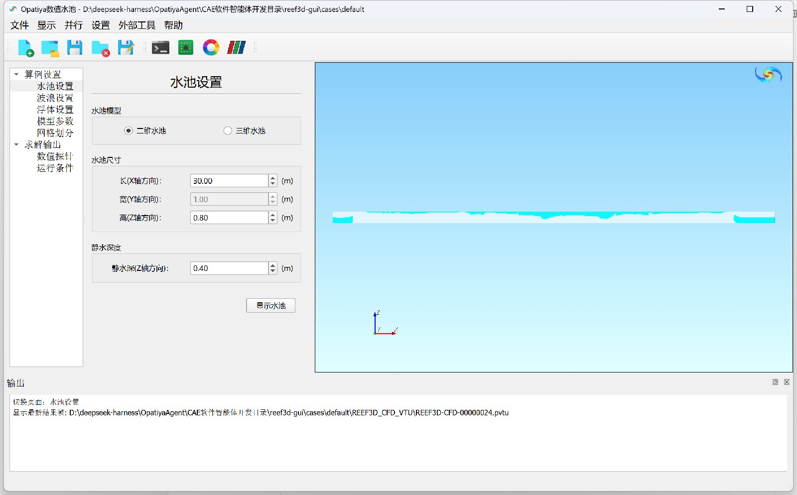

Opatiya数值水池（CFD 求解图形界面） 桌面本地版
水池设定 → 网格生成 → 波浪浮体 → 并行求解 → 实时渲染 —— 一条完整的数值水池CFD工作流。
本软件为面向数值波浪水池（NWT）仿真的CFD求解图形界面： 用户在界面中依次设定水池尺寸与水深、波浪类型与造消波参数、浮体运动与六自由度、网格加密区域与数值探针， 软件自动生成块结构网格、写入求解器配置文件，经MS-MPI多核并行完成求解； 计算过程中界面按保存间隔轮询结果文件，用内置VTK渲染窗口按level-set函数φ的符号自动区分水体与空气并实时着色， 全部中间量（进出口流量、体积守恒、时间步长、CFL数）同步输出到控制台。 软件在本机以桌面应用运行，数据不出本机。

软件主界面（演示算例：30 m×0.8 m二维水池、规则波H=0.02 m、λ=1 m）：左侧为导航树与参数表单， 右侧为VTK实时渲染的求解结果——蓝色为水体（level-set函数φ>0）、白色半透明为空气，图示为t=12 s时刻的规则波传播水面。
主要功能
演示算例30 m×0.8 m二维水池 · 规则波H=0.02 m、λ=1 m · 8核MPI并行 · 12 s物理时间100 s内算完 · 25帧结果自动渲染
算法依据与说明
求解内核采用有限差分CFD方法：level-set法捕捉自由液面，配合Ghost Cell Immersed Boundary方法处理复杂物面， 经MPI域分解实现大规模并行；网格划分为块结构网格，支持三向变分辨率加密。 图形界面由南京欧帕提亚信息科技有限公司开发（PySide6+VTK技术栈），负责参数管理、配置文件生成、 并行任务调度与结果可视化；界面与求解器通过标准输入文件（control.txt/ctrl.txt）与VTU结果文件解耦， 求解器升级不影响界面使用。演示算例的波高探针计算值与线性波理论值吻合良好，可作为验证参考。